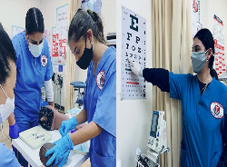
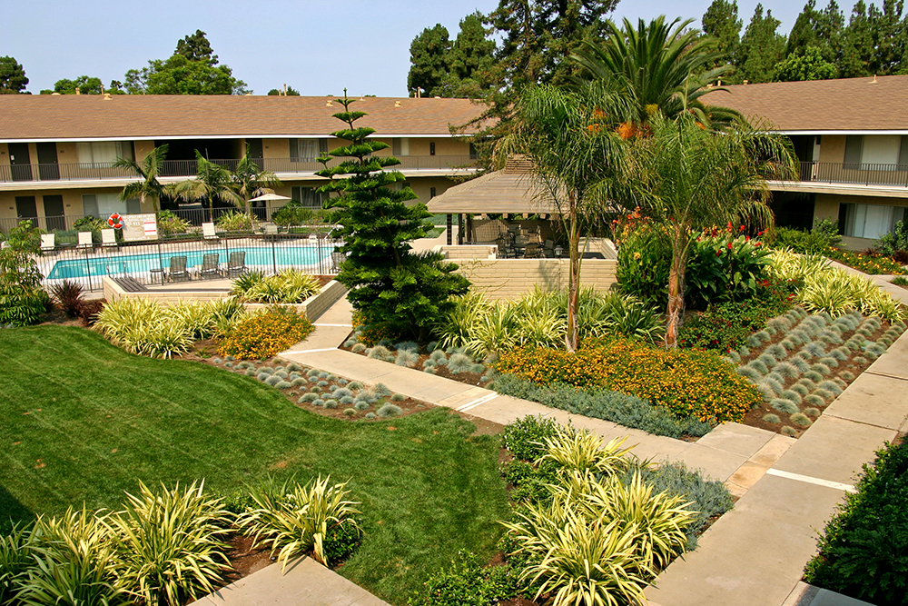
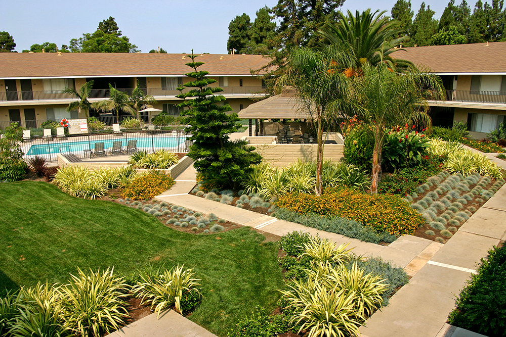
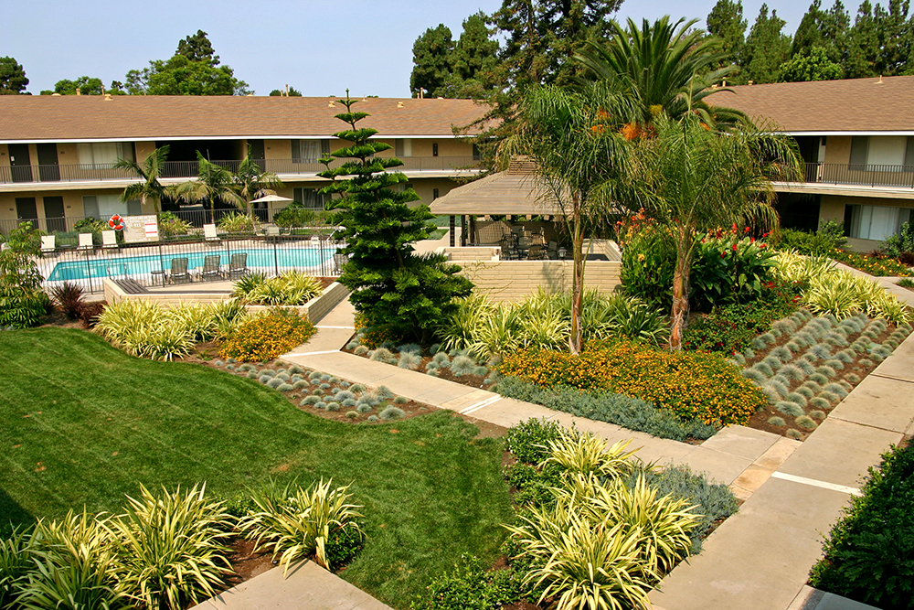

Asees Bajwa
Asees Bajwa, a dedicated pre-medical student at the University of California, Riverside (UCR), is set to graduate in June 2024 with a Bachelor of Science in Biology. Asees has demonstrated a steadfast commitment to pursuing a career in medicine, evidenced by a solid academic foundation, a GPA of 3.4, and a proactive engagement in clinical, volunteer, and extracurricular activities. Armed with a Medical Assistant Certification, Asees has amassed a wealth of practical experience, including caregiving hours and significant hospital hours at Kaiser, preparing them for the challenges and rewards of a career in healthcare.
Asees’s dedication to healthcare extends beyond the classroom and clinical settings. They have actively contributed to the community through volunteering at homeless shelters, blood drives, and vaccine distribution initiatives during the COVID-19 pandemic. These experiences have not only honed Asees’s clinical skills but have also instilled a deep sense of empathy and a strong commitment to service, crucial traits for a future medical professional.
As an active member of the Sikh Student Association and BPSHI at UCR, Asees has demonstrated leadership and a commitment to fostering diversity and inclusion within the university and the broader community. These roles have provided Asees with a unique platform to engage with cultural and health issues, promoting awareness and initiating discussions that bridge cultural understanding and healthcare.
Asees possesses a robust set of skills critical for a pre-med student, including advanced laboratory techniques and clinical skills. These technical abilities are complemented by soft skills such as effective communication, teamwork, and problem-solving, preparing Asees for the collaborative and often challenging environment of medical school and beyond.
Looking to the future, Asees aspires to specialize in dermatology. This ambition is driven by a passion for understanding and treating complex skin conditions and a desire to improve patients’ quality of life through advanced dermatological care. Asees is particularly interested in the intersection of clinical care and research, aiming to contribute to innovations in treatment methods and patient care practices in dermatology.
Asees Bajwa’s journey in the pre-medical field is marked by academic achievement, practical experience, and a deep-seated desire to make a tangible difference in people’s lives. As they move closer to their goal of becoming a dermatologist, Asees continues to embody the principles of dedication, compassion, and innovation that are the hallmarks of an exceptional future physician.
Experience
Medical Assistant
• Interview patients
• record medical history
• Measure patients' vital signs
Teaching Assistant
• Ran private sessions for extra tutoring
• Graded assignments
• Created educational content
Education
UC Riverside
Evergreen Valley High School
National Healthcareer Association
Portfolio

 

